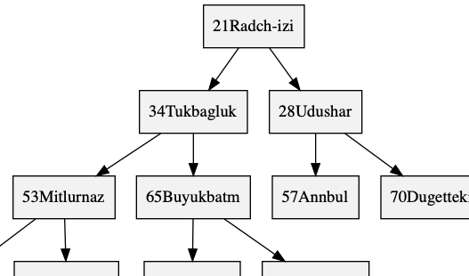

<H>heap
struct <H>heap;
Stores the heap as an implicit binary tree in an array. To initialise it to an idle state, see <H>heap, HEAP_IDLE, {0} (C99), or being static.


A <H>heap is a priority queue built from <H>heap_node. It is a binary heap, proposed by Williams, 1964, Heapsort, p. 347 and using terminology of Knuth, 1973, Sorting. Internally, it is an <<H>heap_node>array with implicit heap properties, with an optionally cached <PH>priority and an optional <PH>value pointer payload. As such, one needs to have Array.h file in the same directory.
<H>heap is not synchronised. Errors are returned with errno. The parameters are #define preprocessor macros, and are all undefined at the end of the file for convenience. Assertions are used in this file; to stop them, define NDEBUG before assert.h.
<H> that satisfies C naming conventions when mangled and an assignable type <PH>priority associated therewith. HEAP_NAME is required but HEAP_TYPE defaults to unsigned int if not specified. <PH> is private, whose names are prefixed in a manner to avoid collisions.HEAP_TYPE; as such, required if HEAP_TYPE is changed to an incomparable type.<A> that satisfies C naming conventions when mangled and function implementing <PH>to_string_fn. There can be multiple to string traits, but only one can omit HEAP_TO_STRING_NAME.assert. Can only be defined once per Heap. Must be defined equal to a (random) filler function, satisfying <PH>biaction_fn. Output will be shown with the to string trait in which it's defined; provides tests for the base code and all later traits.typedef HEAP_TYPE <PH>priority;
Valid assignable type used for priority in <H>heap_node. Defaults to unsigned int if not set by HEAP_TYPE.
typedef int(*<PH>compare_fn)(const <PH>priority a, const <PH>priority b);
Returns a positive result if a comes after b, inducing a strict pre-order of a with respect to b; this is compatible, but less strict then the comparators from bsearch and qsort; it only needs to divide entries into two instead of three categories. The default HEAP_COMPARE is a > b, which makes a minimum-hash.
typedef HEAP_VALUE <PH>value;
If HEAP_VALUE is set, a valid tag type, used as a pointer in <H>heap_node.
typedef <PH>value *<PH>pvalue;
If HEAP_VALUE is set, a pointer to the <PH>value, otherwise a boolean int that is true (one) if the value exists and false (zero) if not.
typedef void(*<PA>to_string_fn)(const <PA>type *, char(*)[12]);
Responsible for turning the first argument into a 12-char null-terminated output string.
typedef void(*<PH>biaction_fn)(struct <H>heap_node *, void *);
Operates by side-effects. Used for HEAP_TEST.
struct <H>heap_node;
Stores a <PH>priority as priority, which can be set by HEAP_TYPE. If HEAP_VALUE is set, also stores a pointer <PH>pvalue called value.
struct <H>heap;
Stores the heap as an implicit binary tree in an array. To initialise it to an idle state, see <H>heap, HEAP_IDLE, {0} (C99), or being static.
| Modifiers | Function Name | Argument List |
|---|---|---|
| static void | <H>heap | heap |
| static void | <H>heap_ | heap |
| static size_t | <H>heap_size | heap |
| static void | <H>heap_clear | heap |
| static int | <H>heap_add | heap, node |
| static struct <H>heap_node * | <H>heap_peek | heap |
| static <PH>pvalue | <H>heap_peek_value | heap |
| static <PH>pvalue | <H>heap_pop | heap |
| static struct <H>heap_node * | <H>heap_reserve | heap, reserve |
| static int | <H>heap_buffer | heap, add |
| static const char * | <A>to_string | box |
| static void | <H>heap_test | param |
static void <H>heap_(struct <H>heap *const heap)
Returns heap to the idle state where it takes no dynamic memory.
static size_t <H>heap_size(const struct <H>heap *const heap)
heap.static void <H>heap_clear(struct <H>heap *const heap)
Sets heap to be empty. That is, the size of heap will be zero, but if it was previously in an active non-idle state, it continues to be.
static int <H>heap_add(struct <H>heap *const heap, struct <H>heap_node node)
Copies node into heap.
heap.size)static struct <H>heap_node *<H>heap_peek(const struct <H>heap *const heap)
heap according to HEAP_COMPARE or null if the heap is empty. This pointer is valid only until one makes structural changes to the heap.static <PH>pvalue <H>heap_peek_value(struct <H>heap *const heap)
This returns the <PH>pvalue of the <H>heap_node returned by <H>heap_peek, for convenience with some applications. If HEAP_VALUE, this is a child of <H>heap_peek, otherwise it is a boolean int.
heap element according to HEAP_COMPARE; if the heap is empty, null or zero.static <PH>pvalue <H>heap_pop(struct <H>heap *const heap)
Remove the lowest element according to HEAP_COMPARE.
size)static struct <H>heap_node *<H>heap_reserve(struct <H>heap *const heap, const size_t reserve)
Ensures that heap is reserve capacity beyond the elements already in the heap, but doesn't add to the size.
heap, where are reserve elements. Writing on this memory space is safe, but one will have to increase the size manually, (see <H>heap_buffer.)reserve).static int <H>heap_buffer(struct <H>heap *const heap, const size_t add)
Adds and heapifies add elements to heap. Uses Doberkat, 1984, Floyd to sift-down all the internal nodes of heap, including any previous elements. As such, this function is most efficient on a heap of zero size, and becomes more inefficient as the existing heap grows. For heaps that are already in use, it may be better to add each element individually, resulting in a run-time of Ο(new elements · log heap.size).
add elements, one is guaranteed success. Practically, it really doesn't make any sense to call this without calling <H>heap_reserve and setting the values, because then one would be inserting un-initialised values on the heap.heap.size + add)static const char *<A>to_string(const <PA>box *const box)
box in a static string buffer of 256 bytes with limitations of only printing 4 things at a time.static void <H>heap_test(void *const param)
Will be tested on stdout. Requires HEAP_TEST, HEAP_TO_STRING, and not NDEBUG while defining assert.
HEAP_TEST.2020 Neil Edelman, distributed under the terms of the MIT License.